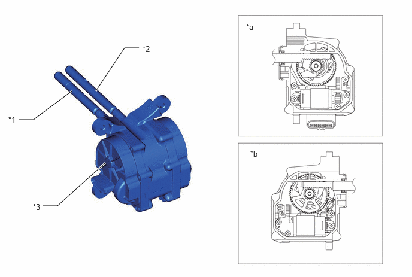
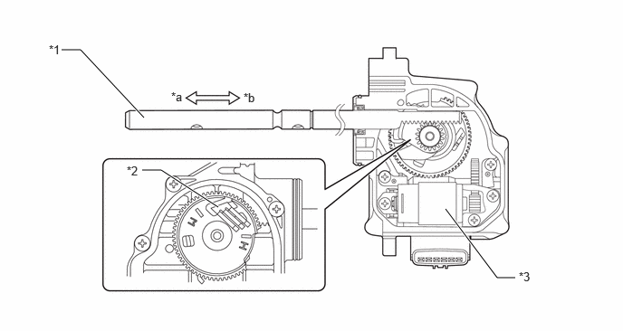
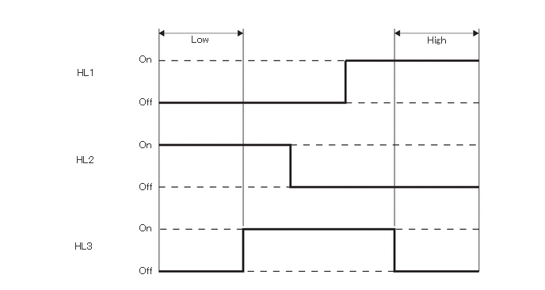
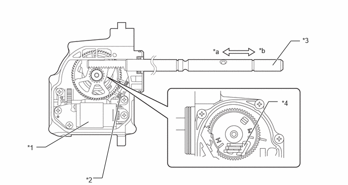

| Last Modified: 10-07-2025 | 6.11:8.1.0 | Doc ID: NM100000002MR9B |
| Model Year Start: 2024 | Model: Tacoma | Prod Date Range: [03/2024 - ] |
| Title: VF4CM (TRANSFER / 4WD / AWD): FOUR WHEEL DRIVE CONTROL SYSTEM: TRANSFER SHIFT ACTUATOR; 2024 - 2026 MY Tacoma Tacoma HV [03/2024 - ] | ||
TRANSFER SHIFT ACTUATOR
CONSTRUCTION
(a) The transfer shift actuator assembly consists of the high-low shift actuator (to switch the transfer gear ratio) and the center differential lock shift actuator (to switch the center differential lock).
(b) Signals from the 4 wheel drive control ECU cause each motor to operate normally or in reverse, which moves the shift fork shaft and switches the drive mode.
(c) The high-low shift motor is equipped with a high-low limit switch, while the center differential lock motor is equipped with a center differential lock limit switch and center differential lock detection switch, in order to detect the position of each motor.
|
*1 |
Center Differential Lock Shift Fork Shaft |
*2 |
High-low Shift Fork Shaft |
|
*3 |
Transfer Shift Actuator Assembly |
- |
- |
|
*a |
High-low Shift Actuator (to Switch the Transfer Gear Ratio) |
*b |
Center Differential Lock Shift Actuator (to Switch the Center Differential Lock) |
OPERATION
(a) High-low Switching Mechanism
(1) When the transfer position switch is operated from H4 to L4, the 4 wheel drive control ECU outputs drive voltage to the high-low shift motor (HM2) and moves the high-low shift fork shaft to the low side. At this time, the 4 wheel drive control ECU detects the position of the high-low shift motor using the high-low limit switch (HL1, HL2 and HL3), and stops outputting drive voltage once the low position is reached. It also blinks the low speed four-wheel drive indicator when switching to the low range, and then illuminates the low speed four-wheel drive indicator once switching to low is complete.
(2) When the transfer position switch is operated from L4 to H4, the 4 wheel drive control ECU outputs drive voltage to the high-low shift motor (HM1) and moves the high-low shift fork shaft to the high side. Once the high position is reached, it stops outputting drive voltage and turns the low speed four-wheel drive indicator light off.
|
*1 |
High-low Shift Fork Shaft |
*2 |
High-low Limit Switch |
|
*3 |
High-low Shift Motor |
- |
- |
|
*a |
High Side |
*b |
Low Side |
Detection Signal
(b) Free-lock Switching Mechanism
(1) If the center differential lock switch is pressed when the center differential is in the free position, the 4 wheel drive control ECU outputs drive voltage to the center differential lock motor (TM1) and moves the center differential lock shift fork shaft to the lock side. At this time, the 4 wheel drive control ECU detects the position of the center differential lock motor according to the center differential lock limit switch (TL2 and TL3) and the center differential lock position according to the center differential lock detection switch (P1), and then stops outputting drive voltage once the lock position is reached. It also blinks the center differential lock indicator when switching to lock, and then illuminates the center differential lock indicator once switching to lock is complete.
(2) If the center differential lock switch is pressed when the center differential is in the lock position, the 4 wheel drive control ECU outputs drive voltage to the center differential lock motor (TM2) and moves the center differential lock shift fork shaft to the free side. Once the free position is reached, it stops outputting drive voltage and turns the center differential lock indicator light off.
|
*1 |
Center Differential Lock Shift Motor |
*2 |
Center Differential Lock Position Switch |
|
*3 |
Center Differential Lock Shift Fork Shaft |
*4 |
Center Differential Lock Limit Switch |
|
*a |
Lock Side |
*b |
Free Side |